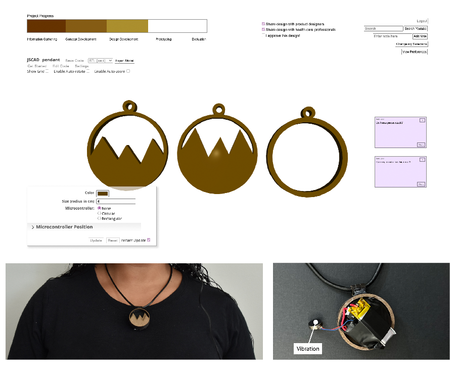

Collaborative Assistive Technology Design
Personalizing Glucose Monitors & Understanding When Collaboration Between Involved Stakeholders is Benficial
This project is currently in progress as part of my Doctoral thesis, and is being conducted in collaboration with two researchers from National Research Council (NRC) Canada, one researcher from Autodesk Research, one professor from the University of British Columbia (UBC), and a professor from the University of Victoria. In this project I designed and conducted a three-phase (prototyping, briefing, focus group) co-design study to understand first, what features and customizations people with type 1 diabetes prioritize when designing their own glucose monitors, and second, at what points in the design process collaboration between individuals with diabetes, health care professionals, and product designers is beneficial.
Women in STEM Symposium Poster
ASSETS '22 Workshop Position Paper
Following study completion and a thematic analysis of our collected data, we transitioned into iterative implementation. Informed by our gathered insights and monitor designs, we designed and developed GlucoMaker , a system that supports the collaborative customization of glucose monitors through the introduction of five specific interface components: a customization guidance interface, a device designer interface, a collaborative discussion interace, a learning portal, and a project overview. Using GlucoMaker, we also demonstrated its usability and versatility by designing and fabricating a set of three customized glucose monitors that reflect our participant-proposed designs and/or discussed preferences.

GlucoMaker , our designed and developed system for collaboratively customizing glucose monitors and an example pendant monitor that was designed using it.